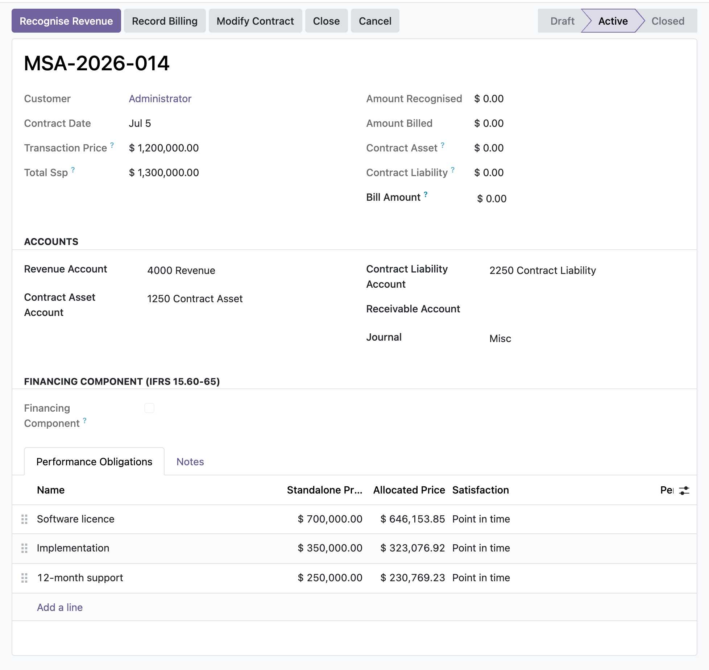

Run the full IFRS 15 five-step model in Odoo 17 Community, from contract and performance obligations through transaction price allocation to balanced revenue and billing journals.
A contract, its performance obligations and their standalone selling prices drive an allocation of the transaction price (IFRS 15.74). Recognition posts the incremental amount since the last run, crediting revenue and clearing the contract liability first, then the contract asset (IFRS 15.105-107). Every entry balances by construction.
Billing debits the receivable and credits the contract asset first, then the contract liability, while recognition works the other way. The two mechanics keep the net contract position, cumulative recognised less cumulative billed, correct on the balance sheet at all times (IFRS 15.106-107).
Opt-in per contract: constrain variable consideration to the highly probable amount (IFRS 15.50-59), allocate a bundle discount to the obligation it relates to (IFRS 15.81-83), discount a financing component with advance or arrears interest (IFRS 15.60-65), and apply separate, prospective or catch-up modifications (IFRS 15.18-21).
You raise a contract with two obligations, the licence transferred at a point in time and support delivered over twelve months, each with its standalone selling price. Activating allocates the transaction price across them. As the year runs you set the support percentage complete and recognise; the module posts the incremental revenue and moves the contract asset. When you invoice ahead of delivery, billing builds a contract liability that later recognition releases, so the ledger shows exactly what is earned and what is deferred.
In the shipped code today, each one a place where a cheaper module silently does the wrong thing.
Recognising against a contract that was billed ahead of performance clears the contract liability first and only then builds the contract asset, so a prepaid contract never shows a phantom asset (IFRS 15.105-107).
A reduced percentage of completion or a de-satisfied point-in-time obligation drops the target below what is posted; recognition then posts a balanced reversing entry, debiting revenue and crediting the asset then the liability, rather than leaving revenue overstated.
Once revenue has posted, the standalone selling price, satisfaction method, accounts, journal and transaction price are locked; re-basing them would silently restate posted revenue with no matching entry. Progress levers stay editable because they flow through a balanced recognition run.
Adding or removing an obligation on a contract with posted revenue is refused outside a sanctioned modification; the modification wizard reallocates the remaining price prospectively, trues up under catch-up, or spins off a separate contract, and records which treatment was applied (IFRS 15.18-21).
A contract with no obligations, a zero total standalone selling price, a missing revenue, contract-asset, contract-liability, receivable, interest account or journal, or an over-recognition beyond the allocated price each raises an explicit message instead of posting a wrong or unbalanced entry.
odoo 19 revenue recognition, IFRS 15 odoo, performance obligation, transaction price allocation, standalone selling price, contract asset contract liability, deferred revenue odoo, over time point in time revenue, percentage of completion revenue, variable consideration constraint, significant financing component, contract modification IFRS 15, revenue recognition journal entries, five step revenue model

Revenue contract with performance obligationsAn IFRS 15 contract with its distinct performance obligations and standalone selling prices, driving the allocation of the transaction price and the recognition schedule.
Premium ERP Heritage modules that extend the same stack, each built to the same engineering bar.
Interactive drag and drop Gantt planner for Odoo 17 Community project tasks with a deterministic server side sche...
Employment Hero Connector is the integration core of the ERP Heritage Employment Hero suite, providing per compan...
The United Kingdom country pack for the ERP Heritage Employment Hero integration
Sync Employment Hero employees, departments and payroll bank details into standard Odoo Community HR over the pla...
Inbound webhook receiver for the Employment Hero people and payroll platform on Odoo 17 Community
Real-time fiscalisation of customer invoices and credit notes with the Mauritius Revenue Authority e-Invoicing (E...